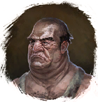

Жареные мидии
Предметы / Обмен
Открыть в интерактивной вики →
| Вес | 7 |
|---|---|
| Цена | 0 |
Описание
Сырье для торговли. Покупает
Для получения требуется обжарить Мидии
Мидии

Шеф-поварДля получения требуется обжарить
Мидии| Сырьё для торговли. |
Рецепт
Торговля: 14k
Где найти
Применение
|
Как добыть
| Мидии положить в костёр у рыбного места. Вскоре готовое сырьё будет висеть у очага. |